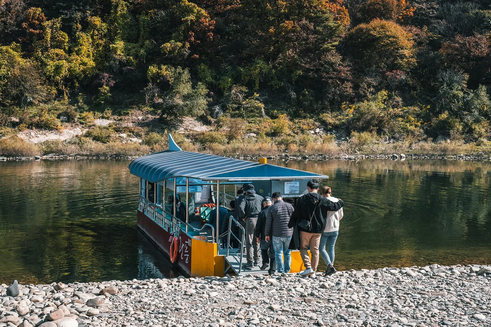
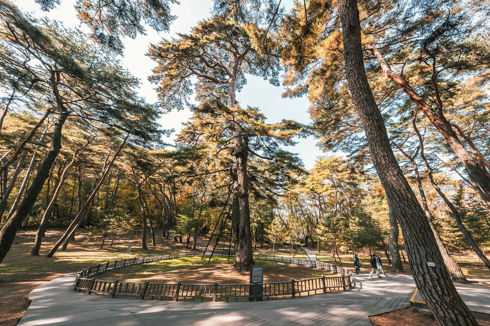
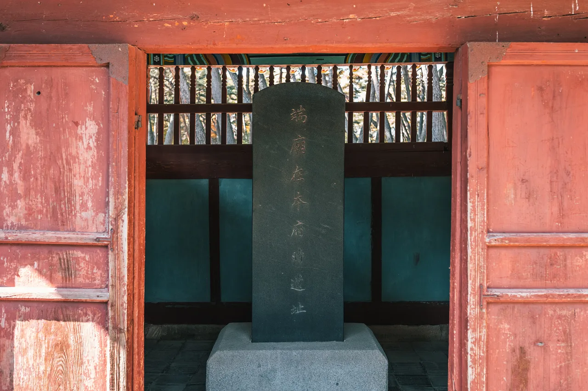
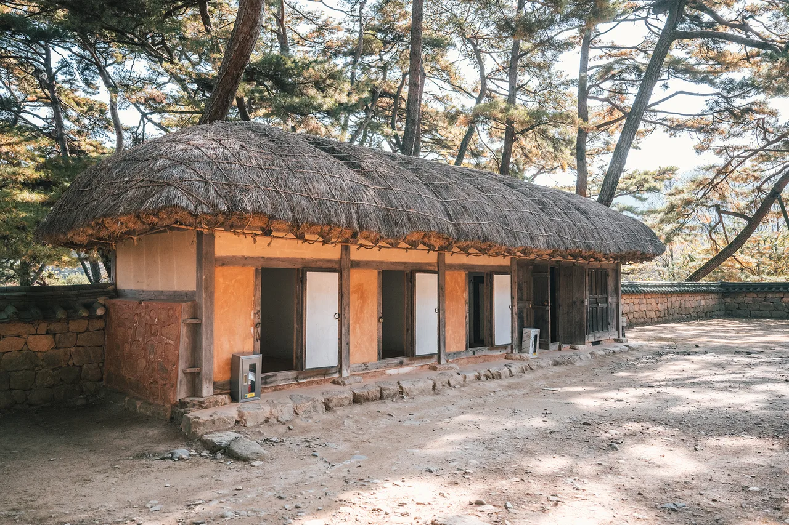
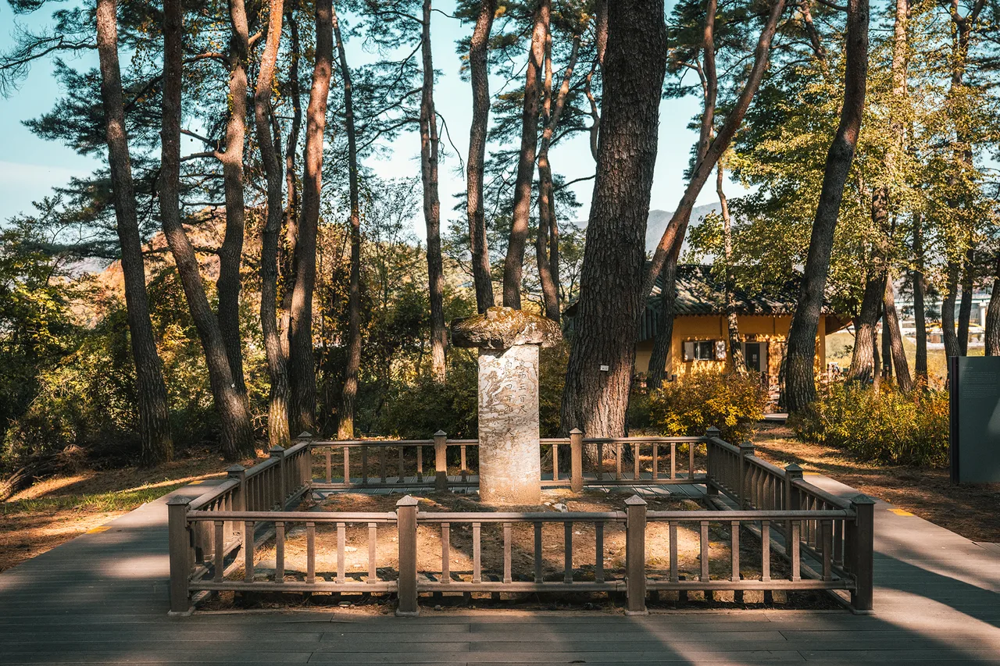
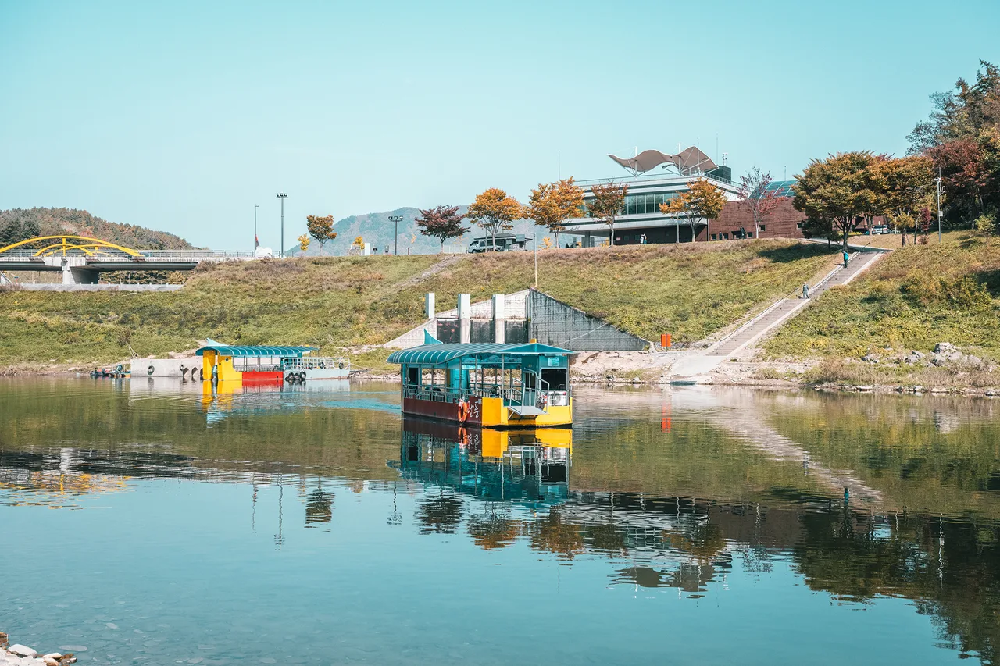
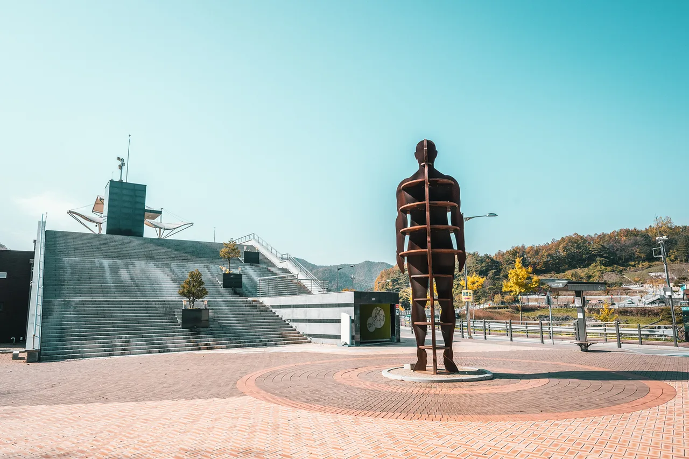
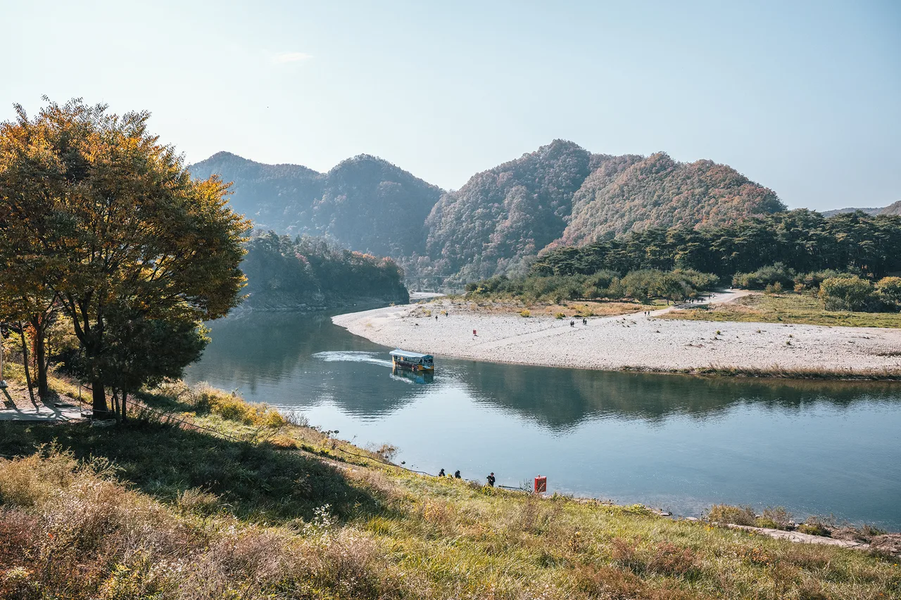

▲ 청령포를 감싸고 도는 서강. 다리 없이 나룻배로만 건널 수 있는 이 물줄기가 유배지로 선택된 이유다 ⓒ 강원관광재단

▲ 청령포로 건너가는 유일한 방법은 나룻배뿐이다. 다리도, 도로도 없다 ⓒ 강원관광재단
1. 섬은 아닌데 배를 타야 들어간다 — 육지 속 작은 섬
청령포는 엄밀히 말하면 섬이 아닙니다. 강원 영월읍 남쪽, 서강(西江)이 크게 굽이치는 물줄기 안쪽에 자리 잡은 좁고 긴 땅입니다. 동·남·북 세 방향은 강물이 완전히 감싸고, 나머지 서쪽 방향은 육육봉(六六峰)이라 불리는 험준한 암벽이 가로막고 있습니다.
그 결과 걸어서든 차로든 밖에서 안으로 들어갈 방법이 없습니다. 다리도, 도로도 없이 오직 나룻배로만 건너야 하는 구조입니다. '육지 속의 섬'이라는 표현이 그래서 나옵니다. 조선시대에는 바로 이 지형적 특성 때문에 죄인을 가두는 유배지로 낙점됐습니다.

▲ 배에서 내리면 울창한 소나무 숲이 펼쳐진다. 2008년 국가지정 명승 제50호로 지정됐다 ⓒ 강원관광재단
2. 열일곱 살 왕이 갇힌 곳 — 단종 유배의 사연
단종은 조선 6대 임금으로, 아버지 문종이 즉위 2년 만에 세상을 뜨면서 열두 살에 왕위에 올랐습니다. 어린 임금을 대신해 숙부 수양대군(훗날 세조)이 권력을 장악했고, 1453년 계유정난을 거쳐 결국 1455년 단종은 왕위를 세조에게 넘겨야 했습니다.
왕위에서 물러난 뒤 노산군으로 강봉된 단종은 1457년(세조 3년) 6월 청령포로 유배됩니다. 그해 여름 홍수로 청령포가 물에 잠길 위험에 처하자 영월읍내 객사인 관풍헌(觀風軒)으로 거처를 옮겼고, 그해 10월 세조 쪽 인사들에 의해 사사되며 짧은 생을 마감했습니다. 그의 시신은 지역 아전이었던 엄흥도가 몰래 수습해 동을지산 자락에 암장했고, 이 무덤이 훗날 장릉이 됩니다.
단종이 청령포에 머문 기간은 두 달 남짓, 관풍헌으로 옮긴 뒤 사사되기까지를 합쳐도 유배 생활 전체는 넉 달 정도로 짧습니다. 관풍헌에 딸린 누각 자규루(子規樓, 옛 이름 매죽루)에 자주 올라 두견새 울음에 자신의 처지를 빗댄 시를 읊었다는 이야기도 전해집니다. 관풍헌과 자규루가 있던 영월부 관아 터는 2016년 사적 제534호로 지정됐습니다. 삼면이 강물로 막힌 좁은 땅에 갇혀 지낸 어린 왕의 이야기는 지금도 청령포를 찾는 이유의 중심에 있습니다.

▲ 영월읍 관풍헌 경내의 단묘재본부시유지비(端廟在本府時遺址碑). 단종이 청령포에서 옮겨와 최후를 맞은 자리임을 알리는 비석이다 ⓒ 강원관광재단
3. 관음송, 금표비, 망향탑 — 유배지에 남은 흔적들
청령포 안에는 단종의 유배 생활을 증언하는 유적이 여럿 남아 있습니다. 가장 상징적인 것은 천연기념물 제349호로 지정된 소나무, 관음송(觀音松)입니다. 나이 약 600년, 높이 30m, 가슴높이 둘레 5.19m에 이르는 이 소나무는 지상 1.6m 높이에서 줄기가 둘로 갈라지는데, 단종이 그 갈라진 줄기에 걸터앉아 시간을 보냈다는 이야기가 전해집니다. '볼 관(觀)'과 '소리 음(音)'을 딴 이름 자체가 단종의 비참한 모습을 보고 슬픈 소리를 들었다는 뜻입니다.
▲ 청령포 소나무숲 안에 자리한 정자와 전통 건물. 관음송을 비롯한 유적들이 이 숲 곳곳에 흩어져 있다 ⓒ 강원관광재단
단종이 실제로 머물렀던 거처는 '단종어가(端宗御街)'라는 이름으로 복원돼 있습니다. 초가지붕을 얹은 소박한 건물로, 유배 생활의 궁핍함을 짐작하게 합니다.

▲ 단종의 유배 생활 거처를 재현한 단종어가. 소박한 초가 형태로 복원됐다 ⓒ 강원관광재단
그 밖에도 일반인의 출입을 금한다는 뜻을 새긴 금표비(禁標碑), 한양의 정순왕후를 그리며 돌을 쌓았다는 망향탑(望鄕塔), 한양 쪽을 바라보며 시름에 잠겼다는 노산대(魯山臺)가 남아 있습니다. 금표비는 1726년(영조 2년) 강원도관찰사 윤양래가 세운 것으로, 동서 300척·남북 490척에 이르는 구역을 일반인 출입 금지 구역으로 정한다는 내용이 새겨져 있습니다. 짧은 동선 안에 유배지의 사연이 촘촘하게 배치돼 있어, 순서대로 걸으면 자연스럽게 이야기를 따라가게 됩니다.

▲ 망향탑. 한양에 두고 온 정순왕후를 그리워하며 단종이 직접 돌을 쌓았다는 이야기가 전해진다 ⓒ 강원관광재단
4. 나룻배 타는 법 — 운영시간과 입장료(2026년 기준)
청령포 관람은 매표소에서 표를 산 뒤 바로 옆 선착장에서 나룻배에 오르는 순서로 진행됩니다. 배는 정해진 시간표 없이 사람이 어느 정도 모이면 바로 출발하며, 강을 건너는 데는 2~3분 남짓밖에 걸리지 않습니다. 입장권 한 장으로 왕복 도선이 모두 포함됩니다.
| 구분 | 개인 | 단체(30인 이상) |
|---|---|---|
| 어른 | 3,000원 | 2,500원 |
| 청소년·군인 | 2,500원 | 2,000원 |
| 어린이 | 2,000원 | 1,500원 |
| 경로(65세 이상) | 1,000원 | 800원 |
| 운영시간 09:00~18:00 (입장마감 17:00) · 도선료 포함 · 7세 이하·국가유공자·장애인 무료 | ||
| 2025년부터 매주 월요일·설날/추석 당일 정기휴무(월요일이 공휴일이면 다음 날 휴무) · 주차 무료 | ||

▲ 매표소 바로 옆 선착장. 배 한 척으로 왕복하는 구조라 성수기에는 대기가 생기기도 한다 ⓒ 강원관광재단
관람 동선은 관음송 → 단종어가 → 노산대 → 망향탑을 돌아 다시 선착장으로 나오는 순환 코스입니다. 빠듯하게 돌면 50분, 여유 있게 둘러보면 1시간~1시간 30분 정도 걸립니다. 배가 한 번에 태울 수 있는 인원이 제한적이라 성수기 주말에는 대기가 생기므로, 오전 9시 첫 배를 노리는 편이 가장 여유롭습니다. 바람이 강하거나 비가 많이 오는 날에는 도선이 일시 중단될 수 있어 방문 전 날씨 확인이 필요합니다.
5. 주차 안내
매표소 앞에 주차 공간이 넓게 마련돼 있습니다. 평소에는 여유가 있지만, 봄가을 단풍철이나 관련 영화·드라마 인기로 방문객이 몰리는 주말에는 자리가 금세 차 임시 주차장을 추가로 운영하기도 합니다. 별도의 주차 요금 없이 이용했다는 방문 후기가 많지만, 성수기에는 혼잡을 감안해 오전 일찍 도착하는 편이 안전합니다.
6. 청령포 다음 코스 — 단종의 무덤, 장릉
청령포를 둘러본 관람객 대부분은 이어서 단종의 능인 장릉으로 향합니다. 차로 10분 안팎이면 닿는 거리로, 대부분 택시나 자가용을 이용합니다. 장릉은 비수도권에 있는 유일한 조선왕릉이자, 다른 조선왕릉들과 함께 2009년 유네스코 세계문화유산에 등재된 곳입니다.
엄흥도가 몰래 암장했던 무덤은 오랫동안 위치가 잊혔다가, 1541년 영월군수 박충원이 찾아내 다시 정비하면서 지금의 자리를 갖췄습니다. 1681년 노산대군으로 추봉되고 1698년 마침내 왕으로 복위되면서 묘호가 장릉으로 정해졌습니다. 능역 안에는 단종의 유품을 볼 수 있는 단종역사관도 자리하고 있습니다.

▲ 청령포와 장릉 일대 곳곳에는 단종의 사연을 기리는 조형물이 세워져 있다 ⓒ 강원관광재단
| 구분 | 청령포 | 장릉 |
|---|---|---|
| 성격 | 단종의 유배지 | 단종의 능(유네스코 세계유산) |
| 입장료(어른) | 3,000원 | 2,000원 |
| 운영시간 | 09:00~18:00(입장마감 17:00), 매주 월요일 휴무 | 09:00~18:00(입장마감 17:00), 매주 월요일 휴무 |
| 이동수단 | 나룻배(도선료 포함) | 도보·차량 |
7. 다녀오기 전에 정리해 둘 것들
첫째, 나룻배는 시간표가 아니라 사람 수로 움직입니다. 성수기 주말에는 대기가 길어질 수 있으니 오전 9시 개장 직후 첫 배를 타는 편이 가장 여유롭습니다.
둘째, 신발은 미끄럼 방지가 되는 것으로 신으십시오. 강가 선착장과 숲길 산책로는 비가 온 뒤 미끄러울 수 있습니다.
셋째, 관람은 50분~1시간 30분, 날씨 변수도 감안하십시오. 바람이 강하거나 폭우가 내리면 도선이 일시 중단될 수 있어 방문 전 기상 상황을 확인하는 편이 안전합니다.
넷째, 장릉까지 묶어서 계획하십시오. 청령포만 보고 돌아가면 단종의 이야기가 반쪽으로 끝납니다. 차로 10분 거리인 만큼 유배지와 능을 함께 돌아보는 편이 훨씬 완결성 있는 여정이 됩니다.
다섯째, 휴무일을 꼭 확인하십시오. 2025년부터 청령포와 장릉 모두 매주 월요일(공휴일이면 다음 날), 설날·추석 당일에는 문을 열지 않습니다. 방문 요일을 정하기 전 반드시 확인하는 편이 헛걸음을 막습니다.

▲ 가을철 청령포 일대. 단풍이 물든 서강의 물줄기가 유배지의 고립감을 한층 더해준다 ⓒ 강원관광재단
정리하면 이렇습니다. 청령포는 다리 없는 지형 자체가 유배지가 된 이유이자, 지금은 나룻배를 타고 건너야 하는 특별한 여행 경험이 됩니다. 관음송 아래 흔적과 장릉의 사연까지 이어보면, 짧은 유배 기록이 하루 여행으로 완성됩니다.